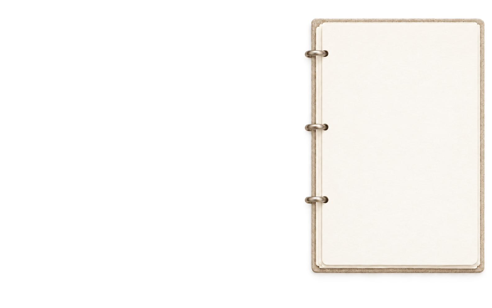

<!doctype html>
<html lang="zh-CN">
<head>
  <meta charset="utf-8">
  <meta name="viewport" content="width=device-width,initial-scale=1">
  <title>成长桌面</title>
  <link rel="stylesheet" href="shared/soft-theme.css">
  <link rel="stylesheet" href="styles.css">
  <link rel="stylesheet" href="note-editor.css">
</head>
<body>
  <svg width="0" height="0" aria-hidden="true" style="position:absolute;pointer-events:none"><defs><pattern id="crayon-burgundy" width="6" height="7" patternUnits="userSpaceOnUse"><rect width="6" height="7" fill="#893e50"/><path d="m.5 1 .8-.3m2.5 2 1-.4M1 5.6l.6-.3m3.1 1 .8-.4" stroke="#fff7e9" stroke-width=".55" opacity=".55"/><path d="m3 .5 .8.4M.2 3.8l.7.3" stroke="#612a3e" stroke-width=".6" opacity=".36"/></pattern></defs></svg>
  <main class="app">
    <section class="ideas">
      <header class="note-bar">
        <button id="add-note" class="new-note" aria-label="新便签"><svg viewBox="0 0 24 24" aria-hidden="true"><path d="M12 3v18M3 12h18"/></svg></button>
        <div id="palette" class="palette" aria-label="便签颜色"></div>
      </header>
      <div id="board" class="board">
        <div id="note-tools" class="note-tools" hidden>
          <button data-action="pin" aria-label="钉在屏幕最上层"><svg viewBox="0 0 24 24" aria-hidden="true"><path d="M9 3h6m-5 0v6l-3 4v2h10v-2l-3-4V3M12 15v6"/></svg></button>
          <button data-action="top" aria-label="置顶便签"><svg viewBox="0 0 24 24" aria-hidden="true"><path d="M12 19V5m-6 6 6-6 6 6"/></svg></button>
          <button data-action="bottom" aria-label="置底便签"><svg viewBox="0 0 24 24" aria-hidden="true"><path d="M12 5v14m-6-6 6 6 6-6"/></svg></button>
          <button data-action="archive" aria-label="完成并归档"><svg viewBox="0 0 24 24" aria-hidden="true"><path d="M4 7h16v13H4zM3 4h18v3H3zM9 12l2 2 4-4"/></svg></button>
          <div class="divider"></div>
          <button data-action="delete" aria-label="删除便签"><svg viewBox="0 0 24 24" aria-hidden="true"><path d="M5 7h14M9 4h6M7 7l1 13h8l1-13M10 11v5M14 11v5"/></svg></button>
        </div>
      </div>
    </section>
    <aside class="schedule" aria-label="日程活页本">
      
      <div id="timeline" class="timeline"></div>
      <div class="page-turn-sheet" aria-hidden="true"></div>
      <button class="page-corner" type="button" aria-label="翻到下午页">
        <svg class="corner-paper" viewBox="0 0 80 80" aria-hidden="true">
          <defs>
            <linearGradient id="corner-back" x1="0" y1="0" x2="1" y2="1"><stop offset="0" stop-color="#fffdf6"/><stop offset=".58" stop-color="#eee6d8"/><stop offset=".82" stop-color="#d7cbb8"/><stop offset="1" stop-color="#faf5eb"/></linearGradient>
          </defs>
          <path class="corner-shadow" d="M8 75 Q38 64 75 8 L75 67 Q75 75 67 75Z"/>
          <path class="corner-fold" d="M8 75 Q25 58 33 34 Q54 28 75 8 Q70 45 8 75Z"/>
        </svg>
      </button>
    </aside>
  </main>
  <div id="toast" class="toast"></div>
  <script src="shared/soft-theme.js"></script>
  <script src="materials.js"></script>
  <script src="app.js"></script>
  <script src="note-markdown.js"></script>
  <script src="note-editor.js"></script>
</body>
</html>
